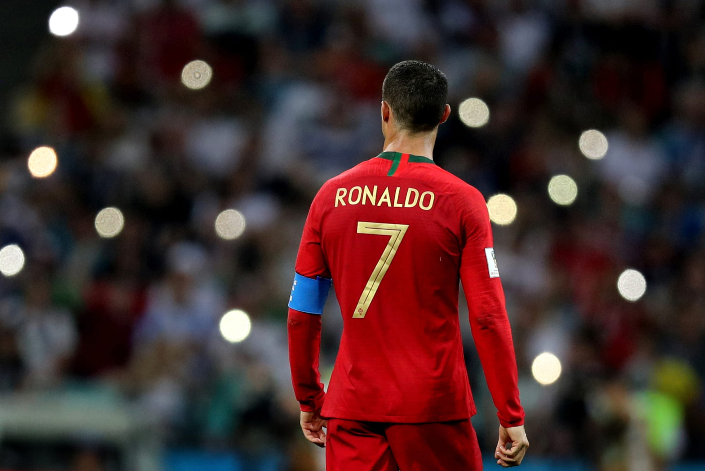

Cristiano Ronaldo dos Santos Aveiro is a Portuguese professional footballer who plays as a forward for and captains both Saudi Professional League club Al Nassr and the Portugal national team. Widely regarded as one of the greatest players of all time, Ronaldo has won five Ballon d'Or awards and four European Golden Shoes, the most by a European player. He has won 32 trophies in his career, including seven league titles, five UEFA Champions Leagues, the UEFA European Championship and the UEFA Nations League. Ronaldo holds numerous scoring records, and several sources have argued that he is the leading goal-scorer in the sport's history.
| Club | Appearances | Goals |
|---|---|---|
| Sporting CP | 31 | 5 |
| Manchester United | 292 | 118 |
| Real Madrid | 438 | 450 |
| Juventus | 134 | 101 |
| Manchester United | 54 | 27 |
| Al Nassr | 5 | 5 |
Last updated on 21 Feb 2023 by Flavia Tasellari